Zelda 1x1: matched weighted WFC and WFC-as-SAT
100 fixed seeds (0–99), 20×20 output, lexical selection, finite/nonperiodic boundary. SAT uses DomainObserver with CaDiCaL 1.9.5. Each SAT seed had a 30.0-second worker timeout; failures and timeouts were retained.

Results
| Heuristic | Engine | Success | Timeout | Failure | Pooled tile KL | Mean tile KL | Median tile KL | Pooled edge KL | Mean edge KL | Median edge KL | Mean runtime s | Median runtime s | Mean conflicts | Mean decisions | Mean observer backtracks | Exact matched images |
|---|---|---|---|---|---|---|---|---|---|---|---|---|---|---|---|---|
| frequency | ordinary WFC | 100 | 0 | 0 | 0.1411103 | 0.17907686 | 0.17739756 | 1.5374916 | 1.6483157 | 1.6471559 | 0.66269863 | 0.65969963 | N/A | 380.98 | 0 | 0 |
| frequency | WFC-as-SAT | 100 | 0 | 0 | 0.14748898 | 0.18389365 | 0.18464719 | 1.5426292 | 1.6495354 | 1.6525296 | 3.9133335 | 3.4804414 | 553.39 | 1650.56 | 571.18 | 0 |
| context | ordinary WFC | 100 | 0 | 0 | 0.041169333 | 0.55281409 | 0.44344486 | 0.065350748 | 0.74588449 | 0.61512742 | 0.62486443 | 0.62040763 | N/A | 351.69 | 0 | 1 |
| context | WFC-as-SAT | 100 | 0 | 0 | 0.050124911 | 0.61460387 | 0.46088945 | 0.071992026 | 0.79689417 | 0.65013322 | 3.379309 | 3.3355144 | 37.3 | 422.89 | 37.43 | 1 |
Uniform remains incomplete. Its separately diagnosed seed-0 WFC-decision run exceeded 174 seconds. It was not run in this weighted sweep. Plain CaDiCaL is only a diagnostic control and is not substituted for WFC-as-SAT here.
Direct answers
- Frequency comparison: ordinary/SAT pooled tile KL is 0.14111/0.147489; pooled edge KL is 1.53749/1.54263. The aggregate distributions are close, but no paired output is exactly identical.
- Context comparison: ordinary/SAT pooled tile KL is 0.0411693/0.0501249; pooled edge KL is 0.0653507/0.071992. The aggregate distributions are also close.
- Exact matches: Frequency has 0/100; Context has 1/100 (seed 0).
- Conflicts when images differ: Frequency has 100 conflict/backtracking runs among 100 differences. Context has 90 among 99; its other 9 differences occurred without a conflict. Difference alone therefore does not prove backtracking.
- Context advantage: SAT preserves the strong pooled resemblance advantage, especially edge KL (0.071992 Context versus 1.54263 Frequency). Mean and median edge KL agree. Per-run tile KL is more variable and is not uniformly better.
- Seed 0 representativeness: Frequency SAT tile/edge KL is 0.191063/1.76743; Context SAT is 0.390953/0.534522. Both lie within their observed distributions. Context seed 0 is better than its medians but is not an extreme best case.
- Timeouts: 0/100 for both SAT heuristics. Frequency has a longer solve-time tail (maximum 15.820s) than Context (0.702s).
These are matched-seed and distributional comparisons, not a claim that ordinary WFC and WFC-as-SAT are equivalent algorithms.
Predetermined matched gallery: seeds 0–4
Seeds 0, 1, 2, 3, and 4 were selected in advance, not after inspecting results.
Seed 0

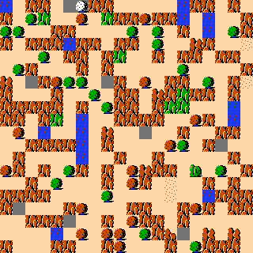


Seed 1
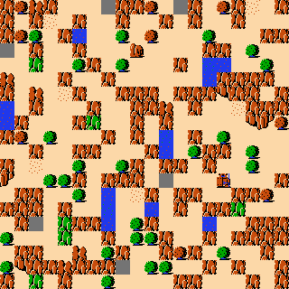
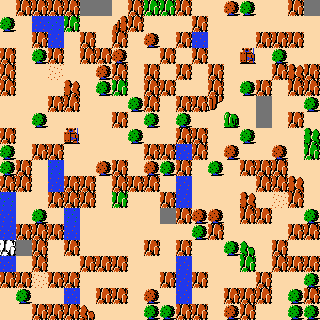
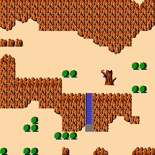
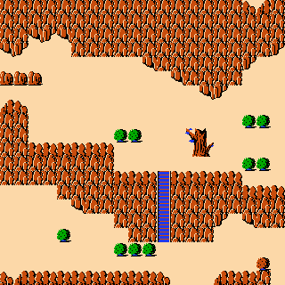
Seed 2
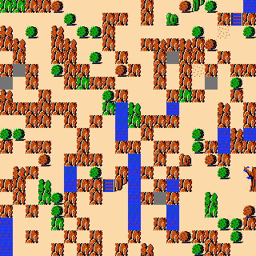
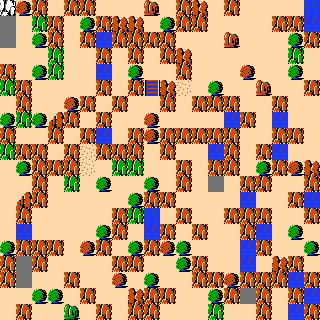
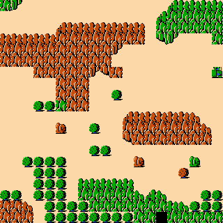
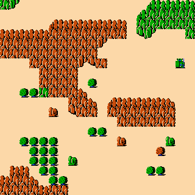
Seed 3
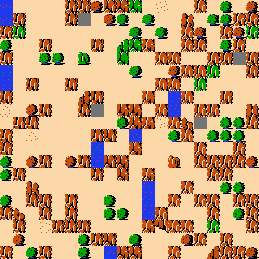
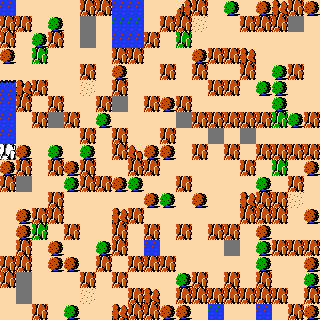
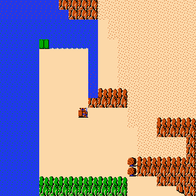
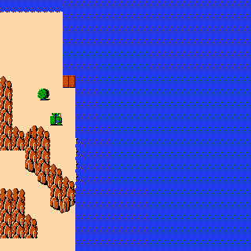
Seed 4
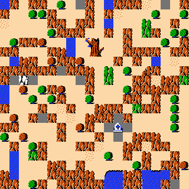
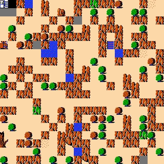
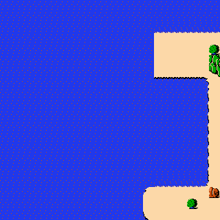